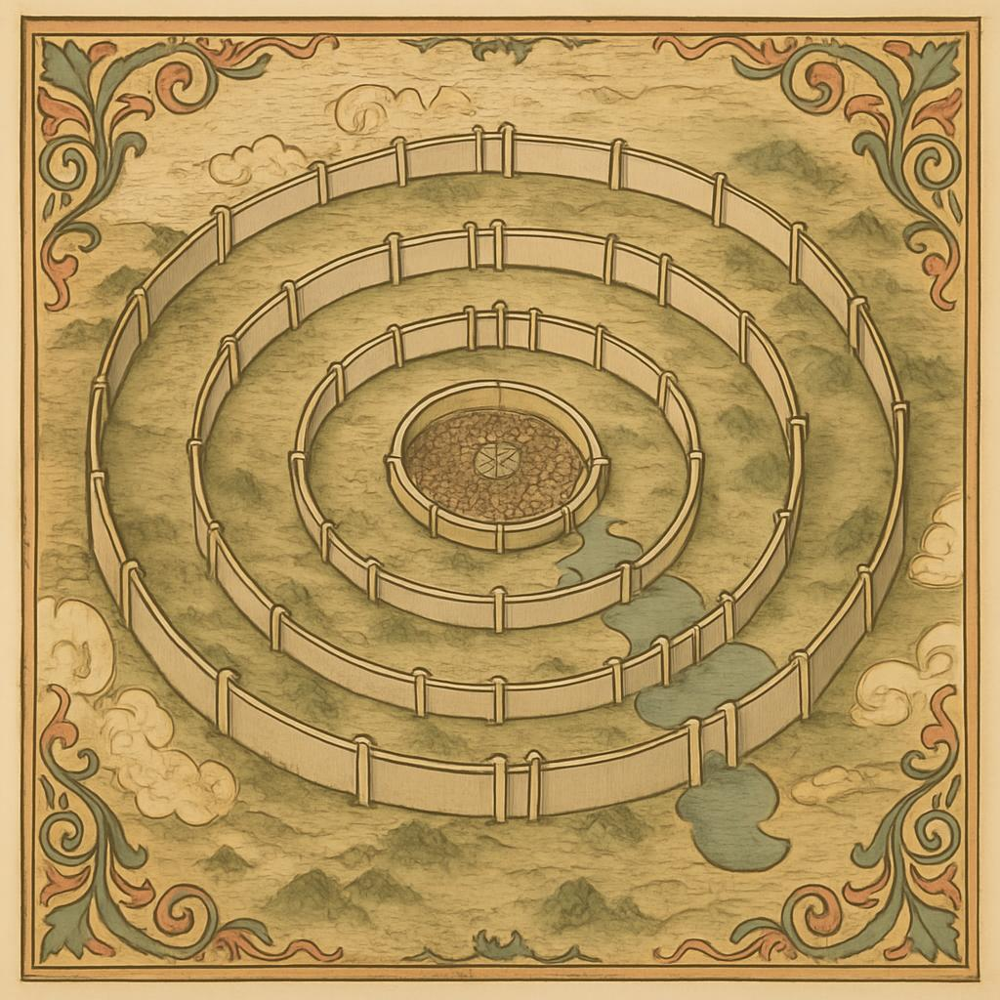
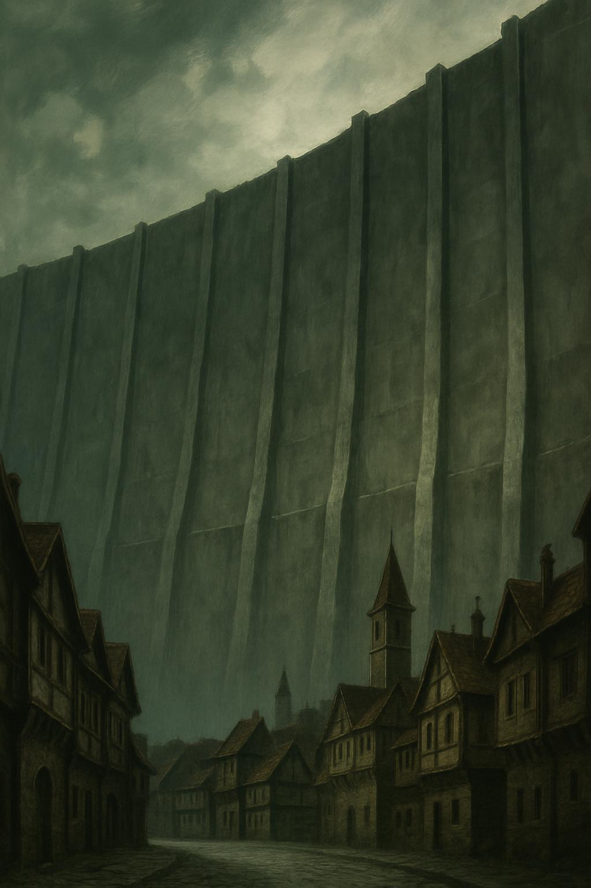
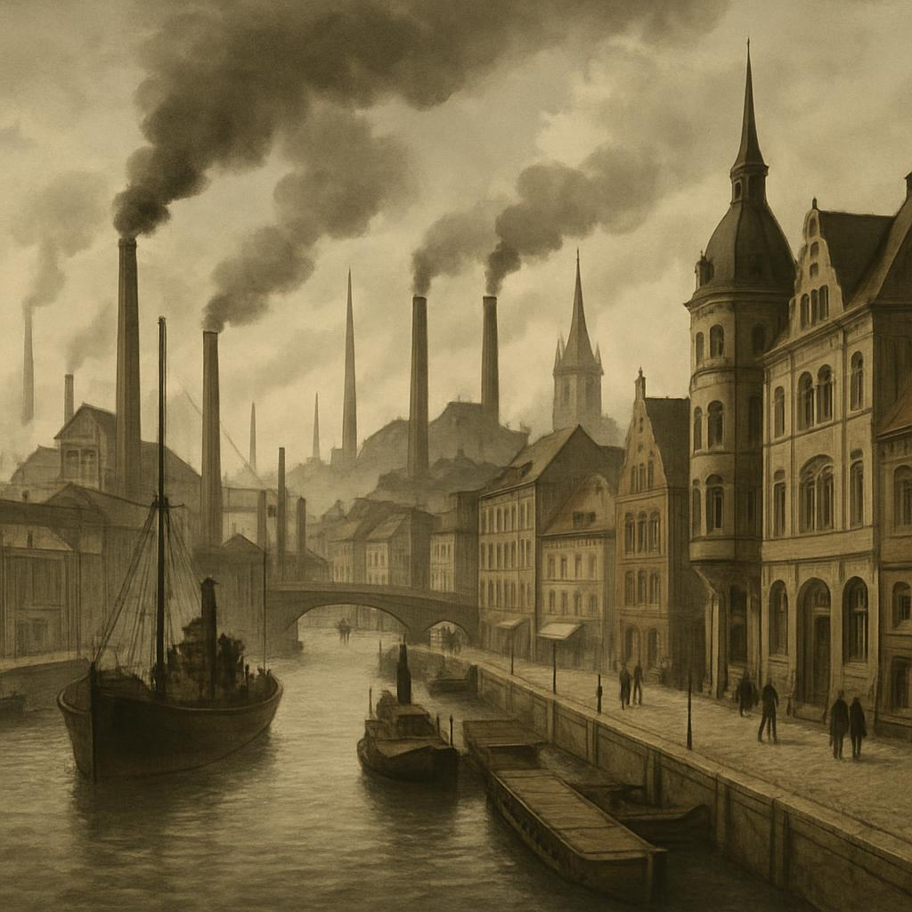
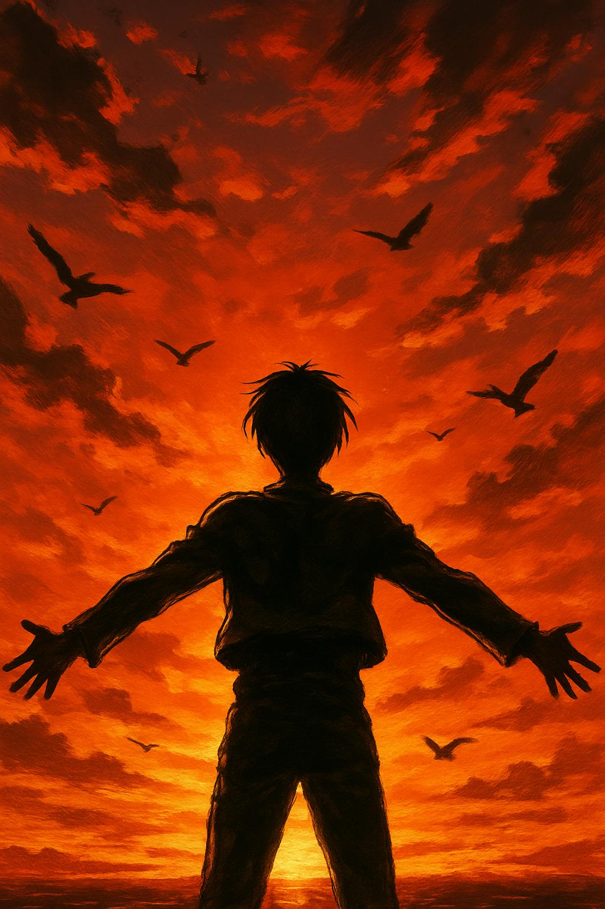

進撃の巨人：ドイツ・北欧神話との関連性と第二次世界大戦の影響
はじめに
2009年から2021年にかけて連載された諫山創の漫画『進撃の巨人』は、その壮大な世界観と複雑な物語構造で世界中の読者を魅了してきました。一見すると単純な「人類vs巨人」の構図から始まるこの物語は、展開を重ねるごとに深い歴史的・文化的背景を持つ重層的な作品へと変貌していきます。
特に注目すべきは、この作品に織り込まれた北欧神話の要素と、第二次世界大戦、特にナチス・ドイツとユダヤ人の歴史を想起させるモチーフの数々です。諫山創は意図的にこれらの歴史的・神話的要素を取り入れることで、単なるエンターテイメントを超えた、人間の本質や歴史の循環性を問いかける物語を創り上げました。
本記事では、『進撃の巨人』に見られる北欧神話の影響と、第二次世界大戦の歴史的要素がどのように作品に反映されているかを詳細に分析します。また、これらの要素が物語にどのような深みと意味をもたらしているのかについても考察していきます。
北欧神話との関連性
始祖ユミルと北欧神話のユミル
『進撃の巨人』の世界において、全ての巨人の力の源である「始祖ユミル」は、物語の根幹を成す重要な存在です。この名前と設定は、北欧神話における原初の巨人「ユミル（Ymir）」から明らかに着想を得ています。
北欧神話のユミルは、世界創造の神話において最初に生まれた存在とされています。『スノッリのエッダ』によれば、宇宙の始まりである「ギンヌンガガプ」という空虚の中で、氷の世界（ニヴルヘイム）と炎の世界（ムスペルヘイム）が接触した際に生じた滴からユミルは誕生しました。彼は自らの体から様々な巨人を生み出し、巨人族（ヨトゥン）の始祖となりました。
しかし、後に神々（アース神族）によって殺され、その体は世界を創るための素材として使われます。ユミルの肉体からは大地が、血からは海が、骨からは山が、髪からは森が、そして頭蓋骨からは天空が作られたとされています。特に注目すべきは、ユミルのまつげが「ミッドガルド」（人間の住む世界）を囲む壁になったという点です。
一方、『進撃の巨人』の始祖ユミルは、2000年前に偶然「巨人の力」を得た少女として描かれています。彼女は奴隷として過酷な扱いを受けながらも、エルディア王フリッツに仕え、その子を産み、最終的に自らの命を犠牲にしてエルディア人の繁栄に貢献します。彼女の死後、その「巨人の力」は9つに分かれ、エルディア人の間で受け継がれていくことになります。
両者の共通点は明らかです。どちらも「原初の存在」であり、その体や力が世界や民族の基盤となっています。また、どちらも自らの意志ではなく、他者（神々や王）によって利用され、犠牲となる存在として描かれています。この「創造のための犠牲」というテーマは、『進撃の巨人』全体を通じて繰り返し現れる重要なモチーフです。
世界の構造と壁の象徴性
北欧神話では、世界は「九つの世界」から成り立っているとされ、その中心に人間の住む「ミッドガルド」があります。このミッドガルドは、原初の巨人ユミルのまつげから作られた壁によって囲まれ、外側の「ヨトゥンヘイム」（巨人の国）から守られています。
『進撃の巨人』の世界も、当初は三重の壁（ウォール・マリア、ウォール・ローゼ、ウォール・シーナ）に囲まれた空間として描かれます。この壁の内側が「人間の世界」であり、外側は「巨人の領域」という構図は、北欧神話のミッドガルドとヨトゥンヘイムの関係性を強く想起させます。
さらに興味深いのは、物語が進むにつれて明らかになる壁の正体です。『進撃の巨人』の壁は、実は無数の「超大型巨人」が硬質化して形成されたものであり、王の命令一つで動き出す可能性を秘めています。これは、北欧神話において、ミッドガルドの壁がユミルという巨人の体の一部から作られたという設定と呼応しています。
また、北欧神話では、最終的な世界の終末「ラグナロク」において、ミッドガルドを囲む壁は崩壊し、巨人たちが侵入してくるとされています。『進撃の巨人』でも、物語の序盤でウォール・マリアが破壊され、巨人が侵入するという展開があり、この類似性も注目に値します。
壁は両者において、「安全」と「監禁」の二重の意味を持っています。人々を外敵から守る一方で、自由を制限し、外の世界への好奇心や探求を妨げる存在でもあるのです。『進撃の巨人』の主人公エレン・イェーガーが「壁の向こうの自由」に強いこだわりを持つのも、この文脈で理解することができます。
巨人の概念と種類
北欧神話における巨人族（ヨトゥン）は、神々（アース神族）と対立する存在として描かれることが多いですが、単純な敵対関係ではなく、時に神々と交流し、結婚することもあります。彼らは自然の原初の力や混沌を象徴し、様々な能力や姿形を持っています。
『進撃の巨人』の巨人たちも、単なる怪物ではなく、複雑な存在として描かれています。物語が進むにつれて、巨人には様々な種類があり、それぞれ特殊な能力を持っていることが明らかになります。「九つの巨人」と呼ばれる特殊な巨人たちは、始祖ユミルの力が分割されたものであり、それぞれが象徴的な意味を持っています。
例えば、「始祖の巨人」は記憶や意志の操作という超越的な力を持ち、「進撃の巨人」は未来の記憶を見る能力を持っています。これらは北欧神話における主神オーディンの知恵や予知能力を想起させます。また、「鎧の巨人」や「超大型巨人」などの戦闘能力に特化した巨人たちは、神々と戦う巨人族の戦士としての側面を反映しているとも考えられます。
さらに、『進撃の巨人』では、一般的な「無垢の巨人」は元々人間であり、特殊な方法で変形させられた存在であることが明かされます。これは、北欧神話において、巨人と人間（あるいは神）の境界が時に曖昧であることとも通じています。
ラグナロク（神々の黄昏）と物語の終末
北欧神話の終末論「ラグナロク」は、神々と巨人の最終決戦であり、多くの神々や巨人、そして人間が死に絶え、世界が一度滅びるという壮大な物語です。しかし、完全な終わりではなく、その後に新しい世界が生まれるという再生のサイクルも含んでいます。
『進撃の巨人』の結末も、この「ラグナロク」を強く想起させるものとなっています。エレンが引き起こした「地鳴らし」は、世界の大部分を破壊し、多くの命が失われる大災厄でした。しかし、それは同時に「巨人の力」という呪いからの解放と、新しい世界の始まりをもたらすものでもありました。
北欧神話のラグナロクでは、神々の中でも生き残る者がおり、新しい世界を築くとされています。『進撃の巨人』でも、アルミン、ミカサ、ジャンなど一部の登場人物は生き残り、新しい時代を担う存在となります。
また、ラグナロクは避けられない運命として予言されており、神々ですらそれを変えることはできないとされています。『進撃の巨人』においても、「未来の記憶」という概念を通じて、歴史の流れが既に決定されているという宿命論的な要素が強調されています。エレンが見た未来は変えられず、彼はその運命を受け入れる形で行動することになります。
このように、『進撃の巨人』の物語構造は、北欧神話のラグナロクという終末と再生のサイクルを現代的に再解釈したものと見ることができます。破壊と再生、犠牲と創造という普遍的なテーマが、両者に共通して存在しているのです。
ドイツ文化と第二次世界大戦の影響
エルディア帝国とマーレ：歴史的対立の構図
『進撃の巨人』の物語が進むにつれて明らかになる、エルディア帝国とマーレという二つの国家の対立関係は、第二次世界大戦期のナチス・ドイツとユダヤ人の関係を強く想起させます。しかし、諫山創は単純な善悪の二項対立ではなく、より複雑で重層的な歴史観を提示しています。
物語の中で、マーレはエルディア人を「悪魔の末裔」として迫害し、収容区に隔離しています。これは一見、ナチス・ドイツによるユダヤ人迫害を彷彿とさせます。しかし、興味深いのは、過去においてはエルディア帝国がマーレを含む他民族を支配し、迫害していたという歴史的背景です。つまり、かつての「加害者」が現在の「被害者」となっているという複雑な構図が描かれています。
この設定は、単純な「善vs悪」の二項対立を超えて、歴史における加害と被害の連鎖、そして「歴史は勝者によって書かれる」という視点を提示しています。エルディア人の過去の残虐行為は、マーレの歴史書では強調されていますが、パラディ島（エルディア人の一部が逃れた島）の歴史教育ではまったく異なる物語が語られています。
この「歴史認識の相対性」というテーマは、第二次世界大戦後の歴史認識をめぐる国際的な議論や、ドイツの「過去の克服（Vergangenheitsbewältigung）」の取り組みを想起させます。ドイツが自国の過去の罪と向き合い、それを教育や記憶の文化に組み込んできたプロセスは、『進撃の巨人』における歴史と記憶の問題と深く共鳴しています。
また、エルディア復権派とマーレ協力派の対立など、被抑圧民族内部の分断と葛藤も描かれており、これは歴史的に見られる被抑圧集団内部の複雑な政治力学を反映しています。
腕章と収容区：ユダヤ人迫害の象徴
『進撃の巨人』において、マーレに住むエルディア人は腕に特別な腕章を付けることを強制されています。この腕章は、彼らが「エルディア人」であることを一目で識別できるようにするためのものです。これは、ナチス・ドイツ時代にユダヤ人が強制的に着用させられた「ダビデの星」の腕章を明らかに想起させるものです。
ナチス政権下では、ユダヤ人は黄色い布地に黒いダビデの星（六芒星）が描かれた腕章の着用を義務付けられました。これは単なる識別のためだけでなく、彼らを社会から隔離し、差別の対象として視覚化するための手段でした。『進撃の巨人』のエルディア人の腕章も同様の機能を果たしており、彼らが社会の中で「異質な存在」として扱われる根拠となっています。
さらに、マーレの都市内にある「リベリオ収容区」は、ナチス時代の「ゲットー」（ユダヤ人居住区）を強く連想させます。収容区は壁で囲まれ、出入りが厳しく管理され、内部の生活環境は都市の他の地域と比べて明らかに劣悪です。エルディア人は収容区内でのみ自由に行動でき、外に出るには特別な許可が必要とされています。
これらの設定は、第二次世界大戦中のユダヤ人ゲットーの状況と多くの共通点を持っています。ワルシャワゲットーをはじめとするユダヤ人居住区は、ナチスによって壁で囲まれ、ユダヤ人は外部との接触を厳しく制限されていました。
『進撃の巨人』では、このような隔離政策が持つ非人道性を描きつつも、収容区内でのエルディア人コミュニティの連帯や、マーレ人との複雑な関係性など、単純な被害者-加害者の図式に収まらない人間関係も丁寧に描かれています。これは、歴史的な抑圧状況下でも存在した人間の多様な反応や関係性を反映したものと言えるでしょう。
優生思想と「悪魔の子孫」
マーレによるエルディア人への迫害を正当化する論理として、「エルディア人は悪魔の血を引く者たち」という考え方が作品内で繰り返し登場します。エルディア人は生まれながらにして「悪」の素質を持つとされ、その「血」が問題視されています。
この設定は、ナチスの人種理論や優生思想を強く想起させるものです。ナチズムのイデオロギーでは、ユダヤ人は生物学的に「劣った人種」とされ、その「血」が「アーリア人種」の純血性を脅かすとされました。このような「血」や「遺伝」に基づく差別は、科学的根拠を装いながら、特定の集団を非人間化し、迫害を正当化する手段として機能しました。
『進撃の巨人』では、エルディア人が巨人に変身する能力を持つという設定が、この「血の神話」に科学的な装いを与えています。しかし、物語が進むにつれて、この能力は単なる「呪い」ではなく、始祖ユミルとの「道」でつながれた結果であり、エルディア人が本質的に「悪」であるわけではないことが明らかになります。
また、マーレ内でのエルディア人「戦士候補生」プログラムは、「良いエルディア人」を選別し、彼らに特権を与えることで分断を図る政策として描かれています。これは、ナチス占領下で一部のユダヤ人に与えられた特別な地位（例えばゲットー内の自治評議会メンバーなど）が、コミュニティ内の分断を生み出した歴史的事実と共鳴しています。
『進撃の巨人』は、このような「血」に基づく差別の不条理性を描きつつも、その差別に対する様々な反応—内面化、抵抗、利用など—を複雑に描き出しています。ガビのような当初は差別意識を内面化していたキャラクターが、経験を通じて自らの偏見に気づいていく過程は、差別の心理的メカニズムとその克服の可能性を示唆しています。
戦争プロパガンダと情報操作
『進撃の巨人』の世界では、マーレによるエルディア人への迫害を正当化するために、様々なプロパガンダが用いられています。エルディア帝国の過去の残虐行為が誇張され、エルディア人は「悪魔の末裔」として描かれます。このような情報操作は、マーレ国民の間にエルディア人への恐怖と憎悪を植え付け、差別政策への支持を獲得するために機能しています。
これは、ナチス・ドイツがユダヤ人に対して行った組織的なプロパガンダ活動と多くの共通点を持っています。ナチスは映画、ポスター、教育などあらゆる媒体を通じて、ユダヤ人を「国家の敵」「ドイツ民族の純血性を脅かす存在」として描き、大衆の間に反ユダヤ感情を煽りました。
『進撃の巨人』では、このようなプロパガンダの効果と、それに対する批判的思考の重要性が描かれています。特に、パラディ島出身のキャラクターたちがマーレの「真実」に触れる場面や、マーレ人がエルディア人との直接的な交流を通じて自らの偏見に気づく場面は、情報操作に対する抵抗の可能性を示唆しています。
また、パラディ島内での「王の記憶改変」という設定も、国家による情報統制と歴史操作の極端な形として解釈できます。レイス王家は「平和」を維持するために島民の記憶を操作し、外の世界の存在すら忘れさせていました。これは、全体主義国家における情報統制の究極的な形態を象徴していると言えるでしょう。
『進撃の巨人』は、このような情報操作と記憶の政治が持つ力と危険性を描きつつ、それに抗う個人の意志や真実を求める姿勢の重要性を強調しています。エレンやアルミンたちが「海の向こう」への好奇心を失わなかったことは、国家による情報統制に対する人間の本質的な抵抗を象徴しているのです。
作品に見る哲学的テーマ
自由と束縛のパラドックス
『進撃の巨人』全体を貫くテーマの一つが「自由」の探求です。主人公エレン・イェーガーは幼少期から「壁の外の自由」に強い憧れを持ち、物語を通じてその実現のために行動します。しかし、皮肉なことに、彼の「自由」への執着は最終的に多くの命を奪う「地鳴らし」という大虐殺につながります。
この矛盾は、自由と束縛の複雑な関係性を示唆しています。エレンは「自由」を求めるあまり、自らの行動の選択肢を狭め、未来の記憶に「束縛」されていくという皮肉な運命をたどります。彼が最終的に到達した「自由」は、彼自身が想像していたものとは大きく異なるものでした。
この「自由のパラドックス」は、ドイツの哲学者ヘーゲルやニーチェの思想とも共鳴しています。特にニーチェの「超人」の概念や、「神は死んだ」という宣言は、伝統的な価値観や道徳から「自由」になることの可能性と危険性を示唆するものでした。『進撃の巨人』のエレンも、既存の価値観や制約を超越しようとする「超人」的な存在として解釈することができます。
また、物語の中で繰り返し登場する「壁」のモチーフは、物理的な束縛だけでなく、精神的・社会的な制約の象徴でもあります。パラディ島の人々は壁によって外敵から「守られる」一方で、自由を制限されています。この二重性は、社会契約論における「安全のための自由の放棄」という考え方とも通じるものがあります。
『進撃の巨人』は、「真の自由とは何か」という問いに対して、単純な答えを提示するのではなく、自由と責任、個人と社会、選択と宿命の複雑な関係性を探求しています。エレンの悲劇的な結末は、「自由」という概念の複雑さと、それを追求することの代償を示唆しているのです。
歴史の循環と暴力の連鎖
『進撃の巨人』の物語世界では、「歴史は繰り返す」という考え方が強調されています。エルディアとマーレの間の憎しみと報復の連鎖は、何世代にもわたって続いており、その起源は2000年前にまで遡ります。
この「歴史の循環」というテーマは、ドイツの哲学者ニーチェの「永劫回帰」の概念や、歴史哲学者ヴィーコの「歴史の螺旋」という考え方とも共鳴しています。特に、第二次世界大戦後のドイツでは、「過去の克服」という課題が国家的な重要性を持ち、歴史の教訓を学び、同じ過ちを繰り返さないための努力が続けられてきました。
『進撃の巨人』では、この歴史の循環を断ち切ることの難しさと重要性が描かれています。エレンの「地鳴らし」は、一見すると暴力の連鎖を断ち切るための極端な手段として描かれていますが、それ自体が新たな憎しみと報復の種を蒔くという皮肉な結果をもたらします。
一方で、アルミンやミカサなど、エレンの友人たちは対話と理解を通じて、この連鎖を断ち切る可能性を模索します。特に最終章での、かつての敵同士が協力して危機に立ち向かう展開は、和解と共存の可能性を示唆しています。
この「暴力の連鎖」というテーマは、第二次世界大戦後の国際関係や平和構築の取り組みとも深く関連しています。戦後のヨーロッパ統合や、ドイツとフランス、ドイツとイスラエルの和解の試みは、歴史的な敵対関係を超えて協力関係を構築する可能性を示すものでした。
『進撃の巨人』は、このような歴史の循環性と、それを断ち切るための困難な試みを描くことで、現実世界における和解と平和構築の課題に対しても示唆を与えています。
「怪物」と人間性の境界
『進撃の巨人』において、「巨人」は単なる敵役ではなく、人間性と怪物性の境界を問いかける象徴として機能しています。物語が進むにつれて、巨人が元々は人間であることが明らかになり、人間と怪物の境界が曖昧になっていきます。
この設定は、ドイツの哲学者ニーチェの有名な警句「怪物と戦う者は、その過程で自らが怪物にならぬよう心せよ。深淵をのぞく時、深淵もまたこちらをのぞいているのだ」を想起させます。『進撃の巨人』の多くのキャラクターは、敵と戦う過程で自らも「怪物」のような行動を取るようになり、善悪の境界が曖昧になっていきます。
エレンは当初、人類の敵である巨人と戦うヒーローでしたが、物語が進むにつれて自らも「怪物」のような存在へと変貌していきます。彼の「地鳴らし」による大量殺戮は、敵を倒すために自らも「怪物」になるという皮肉な結末を象徴しています。
この「人間と怪物の境界」というテーマは、第二次世界大戦とホロコーストの文脈でも重要な意味を持ちます。ナチスの残虐行為は、一般的に「怪物的」と形容されますが、実際にはそれを実行したのは「普通の人々」でした。哲学者ハンナ・アーレントが指摘した「悪の凡庸さ」という概念は、極端な状況下では「普通の人間」も残虐行為に加担する可能性があることを示唆しています。
『進撃の巨人』は、このような人間の二面性と、極限状況下での道徳的選択の難しさを描いています。ライナーやベルトルトのような「敵」のキャラクターにも複雑な背景と動機が与えられ、単純な「善vs悪」の図式を超えた人間ドラマが展開されます。
また、エルディア人が持つ「巨人化」の能力は、人間の内なる「獣性」や「暴力性」の象徴としても解釈できます。文明の仮面の下に潜む原始的な暴力性という、フロイトやユングが指摘した人間の二重性が、巨人というモチーフを通じて視覚化されているのです。
創作における歴史的モチーフの活用
フィクションと歴史の関係性
『進撃の巨人』は、北欧神話や第二次世界大戦の歴史的要素を取り入れながらも、それらを直接的に再現するのではなく、独自の物語世界の中で再解釈しています。このような創作手法は、歴史的出来事や神話を現代的な文脈で捉え直し、新たな意味を見出す試みと言えるでしょう。
諫山創は、インタビューなどで北欧神話からの影響を認めていますが、それらの要素は単なる「設定の借用」ではなく、物語のテーマや構造に深く組み込まれています。同様に、第二次世界大戦やホロコーストを想起させる要素も、単なる歴史的アレゴリーを超えて、普遍的な人間のドラマとして再構築されています。
このようなフィクションにおける歴史的モチーフの活用は、過去の出来事を現代の観客に身近なものとして伝える効果があります。特に若い世代にとって、教科書や歴史書よりも、漫画やアニメのような親しみやすい媒体を通じて歴史的テーマに触れることは、重要な教育的意義を持ちます。
また、フィクションは歴史的出来事の「感情的真実」を伝える上でも効果的です。『進撃の巨人』は、差別や戦争の残酷さ、そして和解の難しさを、キャラクターの個人的な経験を通じて描くことで、抽象的な歴史的事実を具体的な人間ドラマとして提示しています。
一方で、歴史的出来事をフィクションで扱う際には、倫理的な配慮も必要です。『進撃の巨人』は、ナチズムやホロコーストを想起させる要素を含みながらも、それらを単純化したり美化したりすることなく、複雑な歴史的・道徳的問題として提示しています。
現代社会への問いかけ
『進撃の巨人』が描く戦争、差別、自由といったテーマは、歴史的な文脈を超えて、現代社会にも深く関わる普遍的な問題です。作品は読者/視聴者に対して、これらの問題について考えるきっかけを提供しています。
特に、情報操作とプロパガンダの問題は、現代のメディア環境や「フェイクニュース」の時代において、極めて現代的な意義を持っています。『進撃の巨人』では、マーレとエルディアの双方が自国に有利な「歴史」を語り、それが人々の認識や行動に大きな影響を与える様子が描かれています。これは、現代社会における情報の信頼性や、批判的メディアリテラシーの重要性を問いかけるものです。
また、作品に描かれる「壁の内と外」という二項対立は、現代のグローバル化社会における「自国と他国」「内と外」の境界線の問題とも共鳴しています。移民や難民の問題、ナショナリズムの台頭など、現代社会における「境界」をめぐる緊張関係は、『進撃の巨人』の世界観と多くの共通点を持っています。
さらに、エレンの「自由」への執着とその悲劇的な結末は、個人の自由と社会的責任のバランス、あるいは「目的は手段を正当化するか」という古典的な倫理的問いを現代的な文脈で提起しています。
『進撃の巨人』の強みは、これらの複雑な問題に対して単純な答えを提示するのではなく、様々な立場や視点を描き出し、読者/視聴者自身に考えることを促している点にあります。作品は「正解」を示すのではなく、問いを投げかけることで、現代社会における倫理的・政治的な議論に貢献しているのです。
おわりに
『進撃の巨人』は、北欧神話の要素と第二次世界大戦の歴史的モチーフを巧みに取り入れながら、独自の壮大な物語世界を構築した作品です。始祖ユミルと北欧神話のユミル、三重の壁とミッドガルド、エルディア人の迫害とユダヤ人迫害など、多くの類似点が見られますが、それらは単なる「借用」を超えて、現代的な文脈で再解釈され、新たな意味を与えられています。
この作品の真の価値は、歴史的・神話的要素を通じて、人間の本質的な問題—自由と束縛、暴力と和解、個人と社会—を探求している点にあります。『進撃の巨人』は、エンターテイメントとしての魅力を持ちながらも、読者/視聴者に深い思索を促す哲学的な側面も併せ持っています。
また、この作品は「歴史から学ぶ」ことの重要性も示唆しています。物語の中で、歴史を忘れた者たちは同じ過ちを繰り返し、歴史を操作する者たちは人々を誤った方向に導きます。これは、現実世界における歴史教育や歴史認識の重要性とも通じるメッセージです。
『進撃の巨人』が世界中の多くの人々に支持された理由の一つは、このような重層的な読みの可能性にあるのではないでしょうか。表面的には巨人との戦いを描いたアクション作品でありながら、その深層には神話や歴史、哲学的テーマが織り込まれており、様々なレベルで作品を楽しむことができるのです。
諫山創が創り出した『進撃の巨人』の世界は、北欧神話やドイツの歴史という「過去」の要素を取り入れながらも、現代社会や人間の普遍的な問題を問いかける「現在進行形」の物語として、今後も多くの読者/視聴者に影響を与え続けることでしょう。
参考文献・資料
- 『北欧神話』（アンデルセン・ネクセ著）
- 『エッダ―北欧神話歌集』（谷口幸男訳）
- 『ホロコースト全史』（デボラ・リップシュタット著）
- 『ナチス・ドイツの歴史』（リチャード・J・エヴァンズ著）
- 『進撃の巨人 公式ガイドブック』（講談社）
- 諫山創インタビュー（「別冊少年マガジン」2013年5月号）
おすすめ関連商品
『進撃の巨人』の世界をより深く楽しみたい方に、以下の商品がおすすめです。